文件基础
基本概念
文件(File)是以硬盘为载体的存储在计算机上的信息集合，文件可以是文本文档、图片、程序等。
在系统运行时，计算机以进程为基本单位进行资源的调度和分配；而在用户进行的输入、输出中，则以文件为基本单位。
大多数应用程序的输入都是通过文件来实现的，其输出也都保存在文件中，以便信息的长期存储及将来的访问。当用户将文件用于程序的输入、输出时，还希望可以访问、修改和保存文件等，实现对文件的维护管理，这就需要系统提供一个文件管理系统，操作系统中的文件系统就是用于实现用户的这些管理要求的。
数据项：文件系统中最低级的数据组织形式，可分为：
- 基本数据项：用于描述一个对象的某种属性的一个值，是数据中的最小逻辑单位。
- 组合数据项：由多个基本数据项组成。
记录：一组相关的数据项的集合，用于描述一个对象在某方面的属性。
文件：由创建者所定义的、具有文件名的一组相关元素的集合，可分为：
- 有结构文件：文件由若干个相似的记录组成，如一个班的学生记录；
- 无结构文件：被视为一个字符流，比如一个二进制文件或字符文件。
除了文件数据，操作系统还会保存与文件相关的信息，如所有者、创建时间等，这些附加信 息称为文件属性或文件元数据。
文件属性在不同系统中差别很大，但通常都包括如下属性：名称，类型，创建者，所有者，位置，大小，保护，创建时间、最后一次修改时间和最后一次存取时间。
操作系统通过文件控制块来维护文件元数据。
为了便于管理文件，将文件分成了若干类型。由于不同系统对文件的管理方式不同，因此它们的文件分类方法也有很大差异。
- 按性质和用途分类，分为系统文件、用户文件、库文件。
- 按文件中数据的形式分类，分为源文件、目标文件、可执行文件。
- 按存取控制属性分类，分为可执行文件、只读文件、读/写文件。
- 按组织形式和处理方式分类，分为普通文件、目录文件、特殊文件。
文件控制块
文件控制块(FileCont rolBlock, FCB)是用来存放控制文件需要的各种信息的数据结构，以实现按名存取。
文件与 FCB 一一对应，FCB 的有序集合称为文件目录，一个 FCB 就是一个文件目录项。通常，一个文件目录也被视为一个文件，称为目录文件。每当创建一个新文件，系统就要为其建立一个 FCB，用来记录文件的各种属性。
FCB 主要包含基本信息，存取控制信息，使用信息。
索引结点
文件目录通常存放在磁盘上，当文件很多时，文件目录会占用大量的盘块。在查找目录的过程中，要先将存放目录文件的第一个盘块中的目录调入内存，然后用给定的文件名逐一比较，若未找到指定文件，就还需要不断地将下一盘块中的目录项调入内存，逐一比较。
在检索目录的过程中，只用到了文件名，仅当找到一个目录项（其中的文件名与要查找的文件名匹配）时，才需从该目录项中读出该文件的物理地址。也就是说，在检索目录时，文件的其他描述信息不会用到，也不需要调入内存。
因此，有的系统便采用了文件名和文件描述信息分离的方法，使文件描述信息单独形成一个称为索引节点的数据结构，简称i 节点(inode)。在文件目录中的每个目录项仅由文件名和相应的索引节点号（或索引节点指针）构成。
假设一个 FCB 为 64B，盘块大小是 1KB，则每个盘块中可以存放 16 个 FCB（FCB 必须连续存放），若一个文件目录共有 640 个 FCB，则查找文件平均需要启动磁盘 20 次。而在 UNIX 系统中，一个目录项仅占 16B，其中 14B 是文件名，2B 是索引节点号。在 1KB 的盘块中可存放 64 个目录项。这样，可使查找文件的平均启动磁盘次数减少到原来的 1/4，大大节省了系统开销。
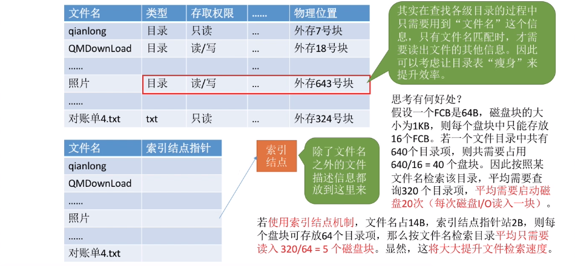
- 磁盘索引节点：是指存放在磁盘上的索引节点。每个文件有一个唯一的磁盘索引节点。
- 内存索引节点：是指存放在内存中的索引节点。当文件被打开时，要将磁盘索引节点复制到内存的索引节点中，便于以后使用。
文件的基本操作
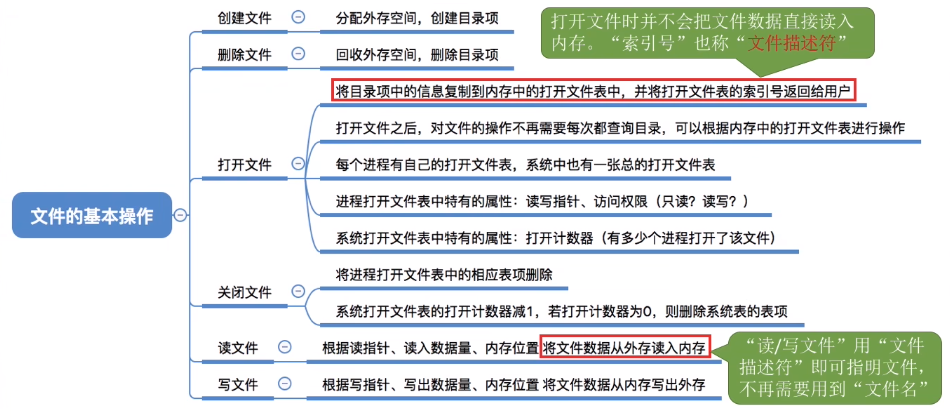
文件属于抽象数据类型。为了正确地定义文件，需要考虑可以对文件执行的操作。操作系统提供系统调用，它对文件进行创建、写、读、重定位、删除和截断等操作。
-
创建文件
创建文件有两个必要步骤：一是为新文件分配外存空间；二是在目录中为之创建一个目录项，目录项记录了新文件名、文件在外存中的地址等信息。
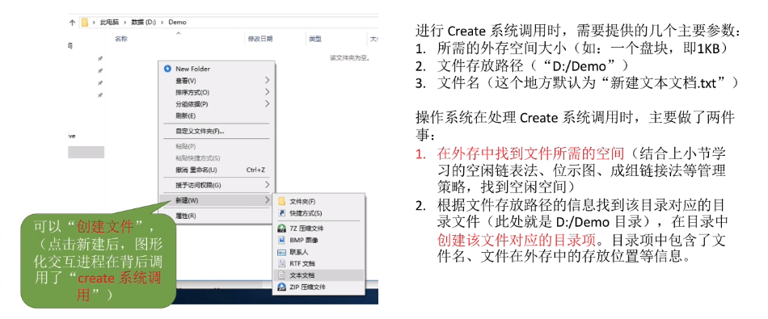
-
删除文件
为了删除文件，根据文件名查找目录，删除指定文件对应的目录项和文件控制块，然后回收该文件所占用的存储空间（包括磁盘空间和内存缓冲区）。
-
读文件
为了读文件，根据文件名查找目录，找到指定文件的目录项后，从中得到被读文件在外存中的地址；在目录项中，还有一个指针用于对文件进行读操作。
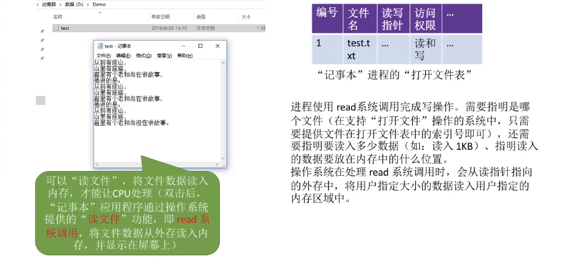
-
写文件
为了写文件，根据文件名查找目录，找到指定文件的目录项后，再利用目录项中的写指针对文件进行写操作。每当发生写操作时，便更新写指针。
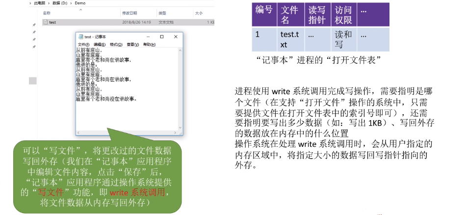
-
打开文件
当用户对一个文件实施多次读/写等操作时，每次都要从检索目录开始。为了避免多次重复地检索目录，大多数操作系统要求，当用户首次对某文件发出操作请求时，须先利用系统调用 open 将该文件打开。
open 中的参数包含文件的路径名与文件名，而 read 只需使用 open 返回的文件描述符，并不使用文件名作为参数。
系统维护一个包含所有打开文件信息的表，称为打开文件表。所谓“打开”，是指系统检索到指定文件的目录项后，将该目录项从外存复制到内存中的打开文件表的一个表目中（不会把文件内容读到内存中，只有进程希望获取文件内容时才会读入文件内），并将该表目的索引号（也称文件描述符）返回给用户。
当用户再次对该文件发出操作请求时，可通过文件描述符在打开文件表中查找到文件信息，从而节省了大量的检索开销。当文件不再使用时，可利用系统调用 close 关闭它，则系统将会从打开文件表中删除这一表目。
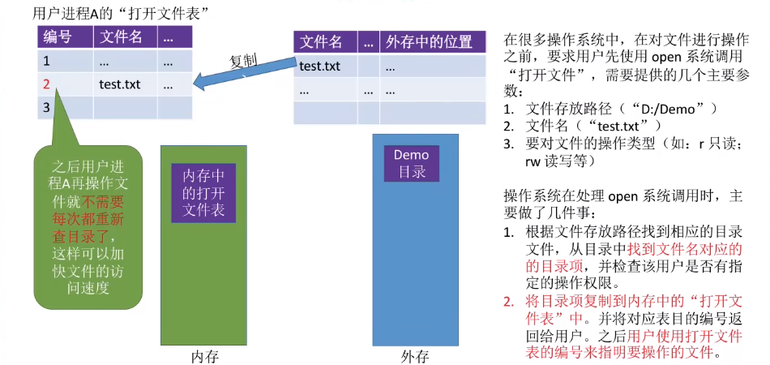
在多个进程可以同时打开文件的操作系统中，通常采用两级表：整个系统表和每个进程表。
整个系统的打开文件表包含与进程无关的信息，如文件在磁盘上的位置、访问日期和文件大小。每个进程的打开文件表保存的是进程对文件的使用信息，如文件的当前读写指针、文件访问权限，并包含指向系统表中适当条目的指针。一旦有进程打开了一个文件，系统表就包含该文件的条目。
当另一个进程执行调用 open 时，只不过是在其打开文件表中增加一个条目，并指向系统表的相应条目。
通常，系统打开文件表为每个文件关联一个打开计数器(OpenCount)，以记录多少进程打开了该文件。当文件不再使用时，利用系统调用 close 关闭它，会删除单个进程的打开文件表中的相应条目，系统表中的相应打开计数器也会递减。当打开计数器为 0 时，表示该文件不再被使用，并且可从系统表中删除相应条目。
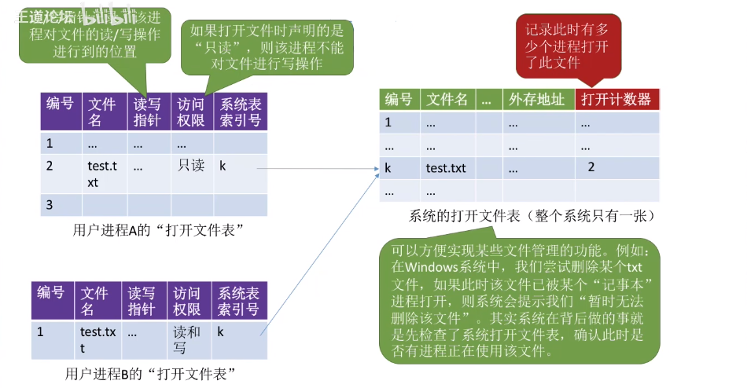
文件名不必是打开文件表的一部分，因为一旦完成对 FCB 在磁盘上的定位，系统就不再使用文件名。对于访问打开文件表的索引号，UNIX 称之为文件描述符，而 Windows 称之为文件句柄。因此，只要文件未被关闭，所有文件操作都是通过文件描述符而不是文件名来进行。
换句话说只要完成了文件打开 open 系统调用，后面再使用 read、write、Lseek、close 等文件操作的系统调用，就不再使用文件名，而使用文件描述符。
文件描述符 = open(文件名, 文件路径); read(文件描述符, 缓冲区首址, 传送的字节数);// 从描述符指示的文件中读入n个字节，并送至缓冲区中。 close(文件描述符); -
关闭文件
关闭文件时只会对内存索引节点进行相关的操作，而不会改变磁盘索引节点的数据结构。
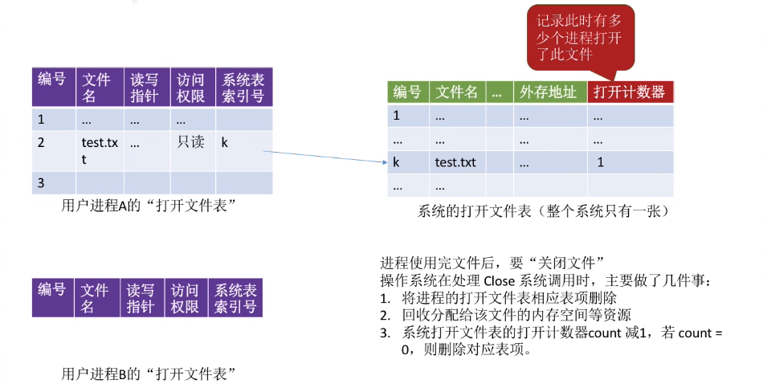
文件保护
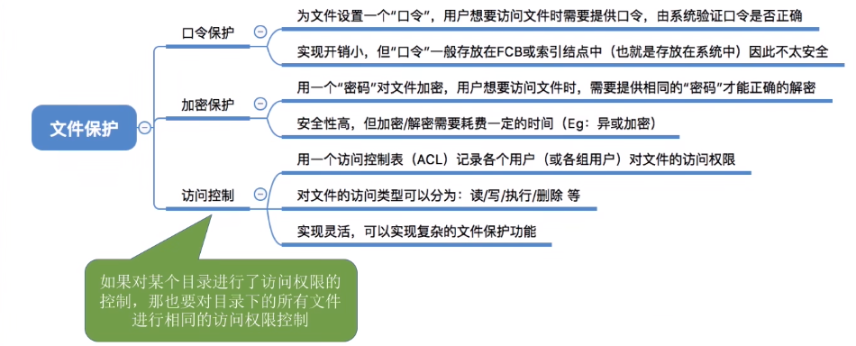
在文件系统中建立相应的文件保护机制，可以通过口令保护、加密保护和访问控制等方式实现。
其中，口令和加密是为了防止用户文件被他人存取或窃取，并没有控制用户对文件的访问类型，而访问控制则用于控制用户对文件的访问方式。
对于多级目录结构而言，不仅需要保护单个文件，而且需要保护子目录内的文件，即需要提供目录保护机制。目录操作与文件操作并不相同，因此需要不同的保护机制。
-
口令保护
口令指用户在建立一个文件时提供一个口令，系统为其建立 FCB 时附上相应口令，同时告诉允许共享该文件的其他用户。用户请求访问时必须提供相应的口令。
这种方法时间和空间的开销不多，缺点是口令直接存在系统内部，不够安全。
-
加密保护
密码指用户对文件进行加密，文件被访问时需要使用密钥。这种方法保密性强，节省了存储空间，不过编码和译码要花费一定的时间。
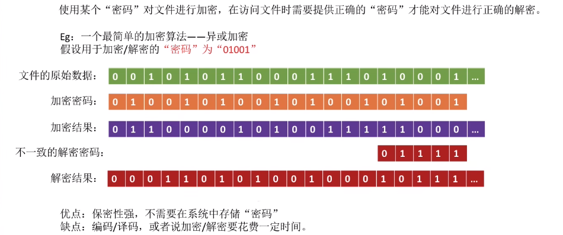
-
访问控制
解决访问控制最常用的方法是根据用户身份进行控制。
而实现基于身份访问的最为普通的方法是，为每个文件和目录增加一个访问控制列表(Access-ControlList，ACL)，以规定每个用户名及其所允许的访问类型。这种方法的优点是可以使用复杂的访问方法，缺点是长度无法预计并且可能导致复杂的空间管理，使用精简的访问列表可以解决这个问题。
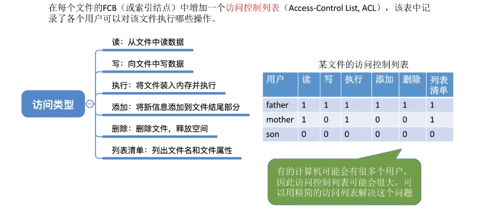
精简的访问控制列表可采用拥有者、组和其他三种用户类型。
- 拥有者：创建文件的用户。
- 组：一组需要共享文件且具有类似访问的用户。
- 其他：系统内的所有其他用户。
创建文件时，系统将文件拥有者的名字、所属组名记录在该文件的 FCB 中。用户访问该文件时，若用户是文件主，按照文件主所拥有的权限访问文件；若用户和文件主在同一个用户组，则按照同组权限访问，否则只能按其他用户权限访问。
文件的逻辑结构
文件的逻辑结构是从用户观点出发看到的文件的组织形式。文件的物理结构是从实现观点出发看到的文件在外存上的存储组织形式。
文件的逻辑结构与存储介质特性无关，它实际上是指在文件的内部，数据逻辑上是如何组织起来的。
按逻辑结构，文件可划分为无结构文件和有结构文件两大类。
无结构文件
无结构文件是最简单的文件组织形式，它是由字符流构成的文件，所以又称流式文件，其长度以字节为单位。
对流式文件的访问，是通过读/写指针来指出下一个要访问的字节的。
在系统中运行的大量源程序、可执行文件、库函数等，所采用的就是无结构文件。由于无结构文件没有结构，因而对记录的访问只能通过穷举搜索的方式，因此这种文件形式对很多应用不适用。
有结构文件
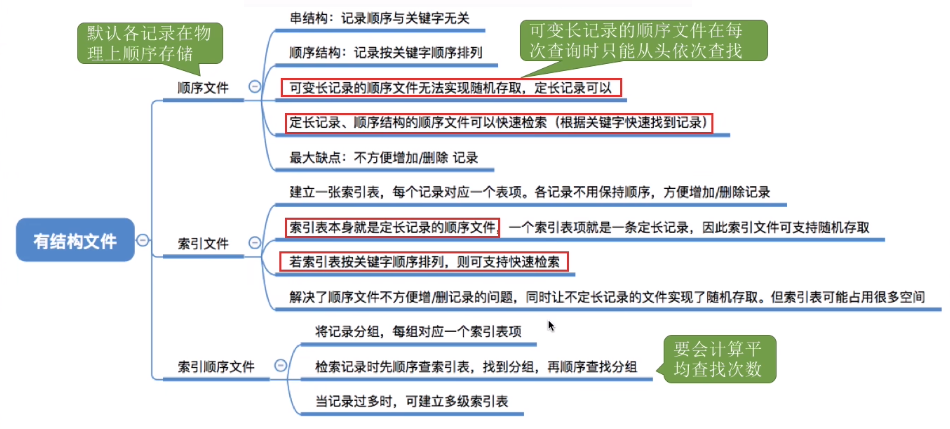
有结构文件是指由一个以上的记录构成的文件，所以又称记录式文件。各记录由相同或不同数目的数据项组成，根据各记录的长度是否相等，可分为定长记录和变长记录两种。
- 定长记录：文件中所有记录的长度都是相同的，各数据项都在记录中的相同位置，具有相同的长度。检索记录的速度快，方便用户对文件进行处理，广泛用于数据处理中。
- 变长记录：文件中各记录的长度不一定相同，原因可能是记录中所包含的数据项数目不同，也可能是数据项本身的长度不定。检索记录只能顺序查找，速度慢。
有结构文件按记录的组织形式可以分为如下几种： 顺序文件，索引文件，索引顺序文件。
顺序文件
文件中的记录一个接一个地顺序排列（逻辑上），记录可以是定长的或可变长的。
顺序文件中记录的排列有两种结构：
- 串结构，各记录之间的顺序与关键字无关，通常是按存入的先后时间进行排列，检索时必须从头开始顺序依次查找，比较费时；
- 顺序结构，所有记录按关键字顺序排列，对于定长记录的顺序文件，检索时可采用折半查找，效率较高。
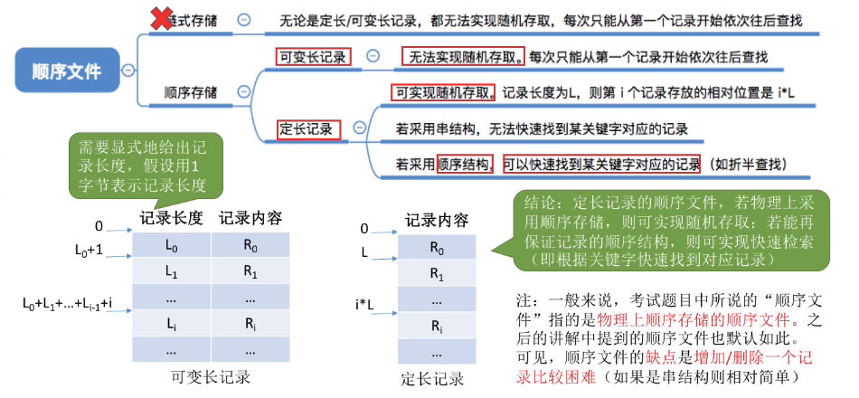
索引文件
对于定长记录的顺序文件，要查找第 i 条记录，可直接根据下式计算得到第 i 条记录相对于第 1 条记录的地址：。
对于变长记录的顺序文件，要查找第 i 条记录，必须顺序地查找前 i-1 条记录，以获得相应记录的长度 L，进而按下式计算出第 i 条记录的地址：。
变长记录的顺序文件只能顺序查找，效率较低。为此，可以建立一张索引表，为主文件的每个记录在索引表中分别设置一个索引表项，其中包含指向记录的指针和记录长度，索引表按关键字排序，因此其本身也是一个定长记录的顺序文件。
这样就将对变长记录顺序文件的顺序检索，转变成了对定长记录索引文件的随机检索，从而加快了记录的检索速度。
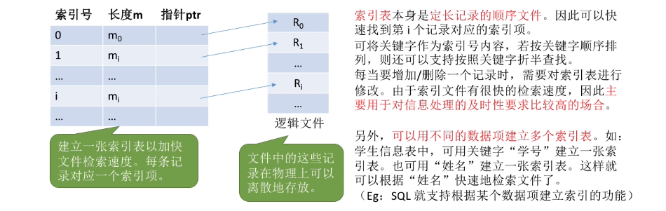
索引顺序文件
索引顺序文件是顺序文件和索引文件的结合。
最简单的索引顺序文件只使用了一级索引，先将变长记录顺序文件中的所有记录分为若干组，然后为文件建立一张索引表，并为每组中的第一个记录建立一个索引项，其中包含该记录的关键字和指向该记录的指针。
主文件包含姓名和其他数据项，姓名为关键字，记录按姓名的首字母分组，同一个组内的关键字可以无序，但是组与组之间的关键字必须有序。将每组的第一个记录的姓名及其逻辑地址放入索引表，索引表按姓名递增排列。检索时，首先查找索引表，找该记录所在的组，然后在该组中使用顺序查找，就能很快地找到记录。
索引文件的缺点：每个记录对应一个索引表项，因此索引表可能会很大。比如：文件的每个记录平均只占 8B，而每个索引表项占 32 个字节，那么索引表都要比文件内容本身大 4 倍，这样对存储空间的利用率就太低了。
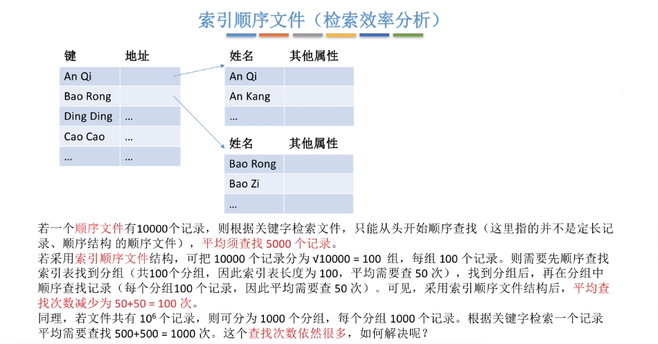

文件的物理结构
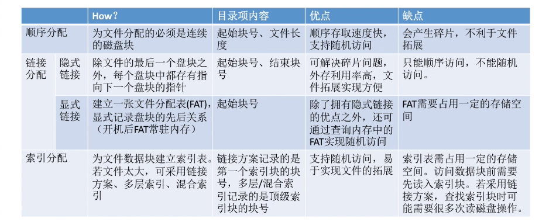
文件块、磁盘块
内存与磁盘之间的数据交换（磁盘 I/O）都是以块为单位进行的
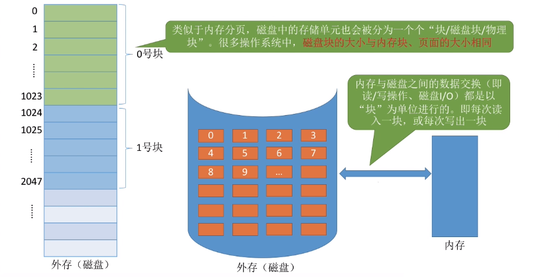
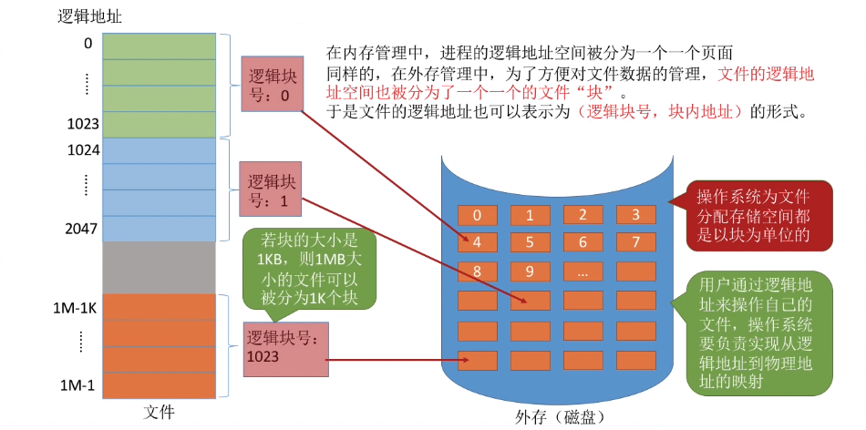
文件的分配方式
文件的物理结构就是研究文件的实现，即文件数据在物理存储设备上是如何分布和组织的。
同一个问题有两个方面的回答：一是文件的分配方式，讲的是对磁盘非空闲块的管理；二是文件存储空间管理，讲的是对磁盘空闲块的管理。
文件分配对应于文件的物理结构，是指如何为文件分配磁盘块。常用的文件分配方法有三种：连续分配、链接分配和索引分配。
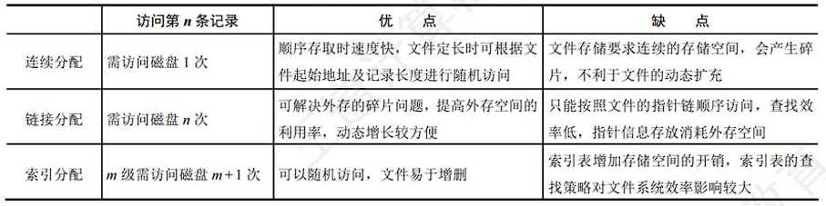
连续分配
连续分配方式要求每个文件在磁盘上占有一组连续的块。磁盘地址定义了磁盘上的一个线性排序，这种排序使进程访问磁盘时需要的寻道数和寻道时间最小。
采用连续分配时，逻辑文件中的记录也顺序存储在相邻的物理块中。一个文件的目录项中应记录该文件的第一个磁盘块的块号和所占用的块数。若文件长 n 块并从位置 b 开始，则该文件将占有块 b,b+1,b+2,…,b+n-1，要访问文件的第 i 块，可直接访问块 b+i-1。
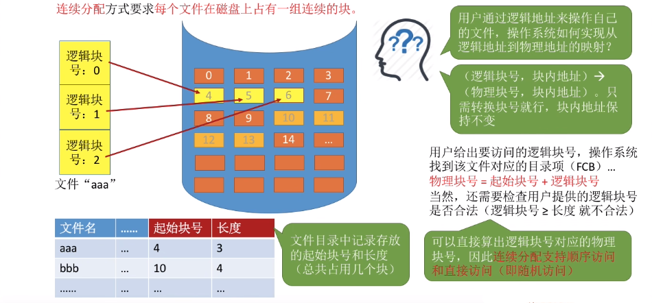
- 优点：
- 支持顺序访问和直接访问（即随机访问）；
- 顺序访问容易且速度快。
- 缺点：
- 要为一个文件分配连续的存储空间，与内存分配类似，为文件分配连续的存储空间会产生很多外部碎片。
- 必须事先知道文件的长度，也无法满足文件动态增长的要求，否则会覆盖物理上相邻的后续文件。
- 为保持文件的有序性，删除和插入记录时，需要对相邻的记录做物理上的移动。
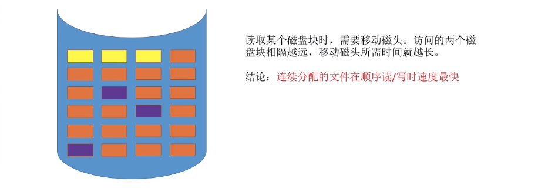
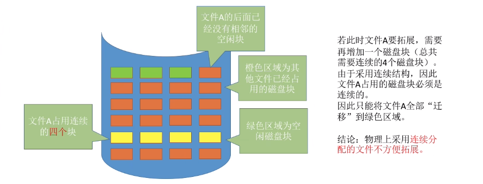
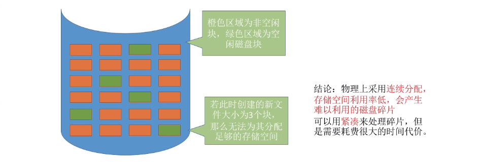
链接分配
链接分配是一种采用离散分配的方式。
链式分配的优点：
- 消除了磁盘的外部碎片，提高了磁盘的利用率。
- 便于动态地为文件分配盘块，因此无须事先知道文件的大小。
- 文件的插入、删除和修改也非常方便。
链接分配又可分为隐式链接和显式链接两种形式。
-
隐式链接
目录项中含有文件第一块的指针（盘块号）和最后一块的指针。每个文件对应一个磁盘块的链表，磁盘块分布在磁盘的任何地方。除文件的最后一个盘块外，每个盘块都存有指向文件下一个盘块的指针，这些指针对用户是透明的。
缺点：
- 只支持顺序访问，若要访问文件的第 i 块，则只能从第 1 块开始，通过盘块指针顺序查找到第 1 块，随机访问效率很低。
- 稳定性问题，文件盘块中的任何一个指针出问题，都会导致文件数据的丢失。
- 指向下一个盘块的指针也要耗费一定的存储空间。
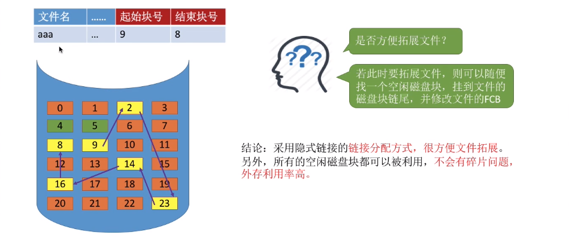
为了提高查找速度和减小指针所占用的存储空间，可以将几个盘块组成一个簇，按簇而不按块来分配，可以大幅地减少查找时间，也可以改善许多算法的磁盘访问时间。比如一簇为 4 块，这样，指针所占的磁盘空间比例也要小得多。这种方法的代价是增加了内部碎片。
若对文件存储空间的分配以簇为单位，则一个文件所占用的空间只能是簇的整数，不存在一个文件分配一个簇和一个盘块。
-
显式链接
显式链接是指将用于链接文件各物理块的指针，显式地存放在内存的一张链接表中，该表在整个磁盘中仅设置一张，称为文件分配表(FileAllocationTable, FAT)。
开机时文件分配表放入内存，并常驻内存。
每个表项中存放指向下一个盘块的指针。文件目录中只需记录该文件的起始块号，后续块号可通过查 FAT 找到。
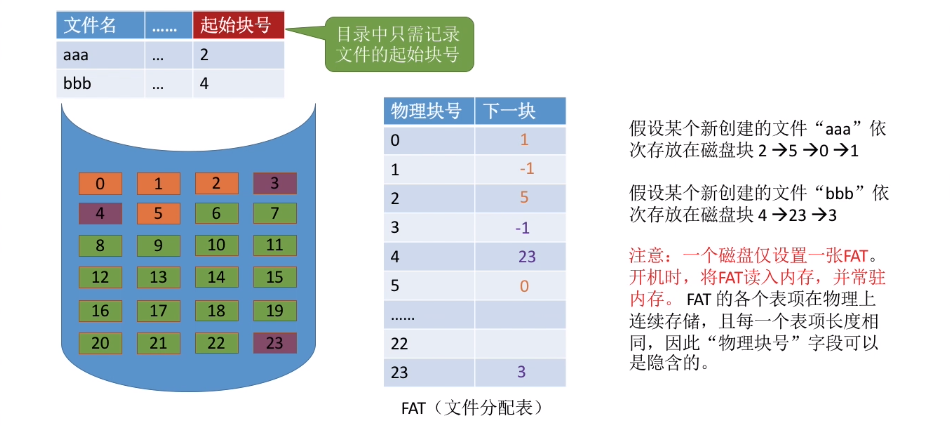
不难看出，FAT 的表项与全部磁盘块一一对应，并且可以用一个特殊的数字-1 表示文件的最后一块，可以用 -2 表示这个磁盘块是空闲的（当然也可指定为-3，-4）。因此，操作系统可以通过 FAT 对磁盘空闲空间进行管理。当某进程请求系统分配一个磁盘块时，系统只需从 FAT 中找到-2 的表项，并将对应的磁盘块分配给该进程即可。
优点：支持顺序访问，也支持直接访问，要访问第 i 块，无须依次访问前 i-1 块；FAT 在系统启动时就被读入内存，检索记录是在内存中进行的，因而不仅显著提高了检索速度，而且明显减少了访问磁盘的次数。
缺点：FAT 需要占用一定的内存空间。
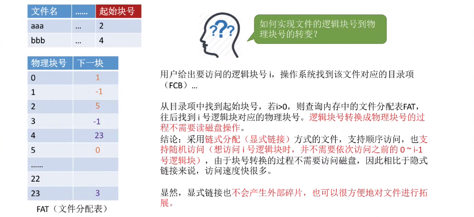
Note
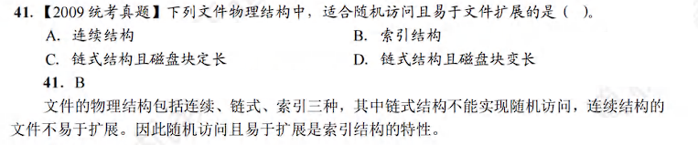
索引分配
单级索引分配方式
事实上，在打开某个文件时，只需将该文件对应的盘块的编号调入内存即可，完全没有必要将整个 FAT 调入内存。为此，应该将每个文件所有的盘块号集中地放在一起，当访问到某个文件时，将该文件对应的盘块号一起调入内存即可，这就是索引分配的思想。
它为每个文件分配一个索引块（表），将分配给该文件的所有盘块号都记录在该索引块中。
假设盘块大小为 4KB，每个盘块号占 4B，则一个索引块中可存放 1024 个盘块号，若采用单级索引，则支持的最大文件为。
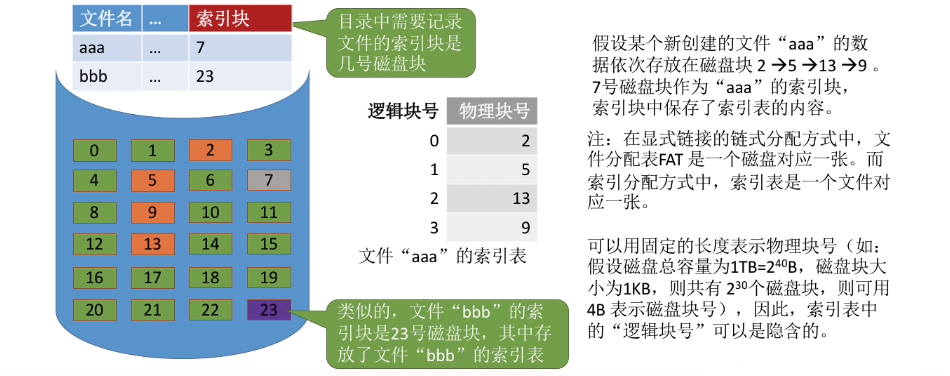
索引分配的优点是支持直接访问，当要访问第 i 块时，索引块的第 1 个条目指向的便是文件的第 i 个块。索引分配也不会产生外部碎片。
缺点是索引块增加了额外的存储空间开销。
索引块的主要问题是，每个文件必须有一个索引块，当文件很小时，比如只有数个盘块，该方式仍为之分配一个索引块，此时索引块的利用率很低；当文件很大时，若其盘块号需要占用若干索引块，此时可通过链指针将各索引块按序链接起来，但这种方法是低效的。
多级索引分配方式
显然，当文件太大而索引块太多时，应该为这些索引块再建立一级索引，称为主索引，将第一个索引块的盘块号、第二个索引块的盘块号填入该主索引表，这样，便形成了二级索引分配方式，其原理类似于内存管理中的多级页表。
假设盘块大小为 4KB，每个盘块号占 4B，一个索引块中可存放 1024 个盘块号，若采用两级索引，则支持的最大文件为 。
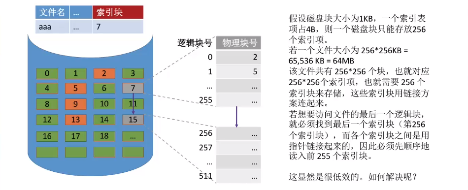
查找时，通过主索引查找第二级索引，再通过第二级索引查找所需数据块。如果文件非常大，那么还可使用三级、四级索引分配方式。
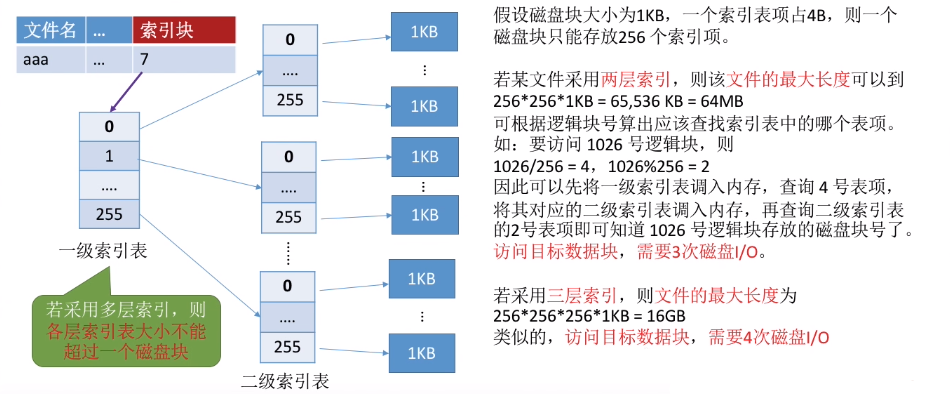
Tip
采用 K 层索引结构，且顶级索引表未调入内存，则访问一个数据块只需要 K+1 次读磁盘操作。
优点：极大加快了对大型文件的查找速度。
缺点：当访问一个盘块时，其所要启动磁盘的次数随着索引级数的增加而增多，即使是对数量众多的小文件也是如此。
混合索引分配方式
为了能够较全面地照顾到小型、中型、大型和特大型文件，可采用混合索引分配方式。
- 对于小文件，为了提高对众多小文件的访问速度，最好能将它们的每个盘块地址直接放入 FCB，这样就可以直接从 FCB 中获得该文件的盘块地址，即为直接寻址。
- 对于中型文件，可以采用单级索引分配，需要先从 FCB 中找到该文件的索引表，从中获得该文件的盘块地址，即为一次间址。
- 对于大型或特大型文件，可以采用两级和三级索引分配。
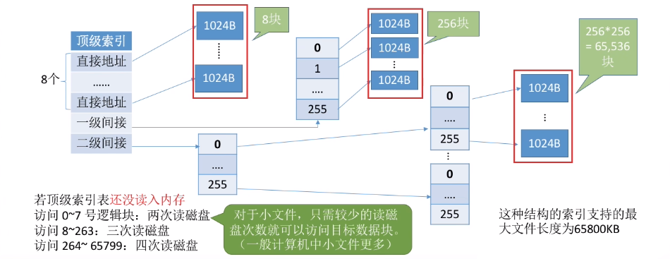
文件目录
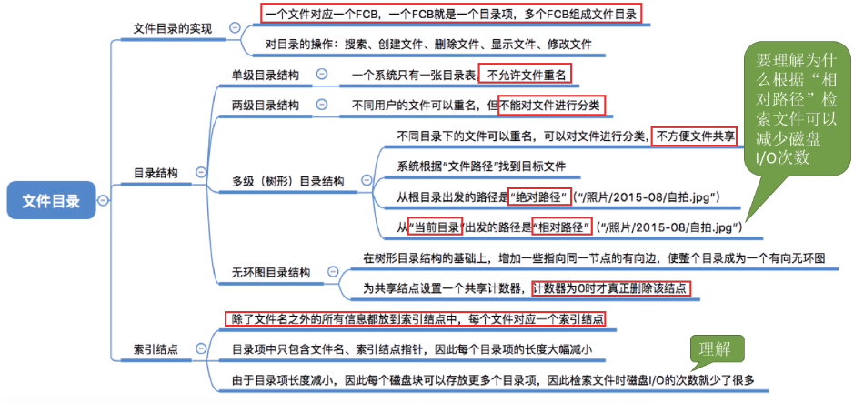
目录结构
-
单级目录结构
在整个文件系统中只建立一张目录表，每个文件占一个目录项。
- 当建立一个新文件时，必须先检索所有目录项，以确保没有“重名”的情况，然后在该目录中增设一项，将新文件的属性信息填入该项。
- 当访问一个文件时，先按文件名在该目录中查找到相应的 FCB，经合法性检查后执行相应的操作。
- 当删除一个文件时，先从该目录中找到该文件的目录项，回收该文件所占用的存储空间，然后清除该目录项。
单级目录结构实现了“按名存取”，但是存在查找速度慢、文件不允许重名、不便于文件共享等缺点，而且对于多用户的操作系统显然是不适用的。
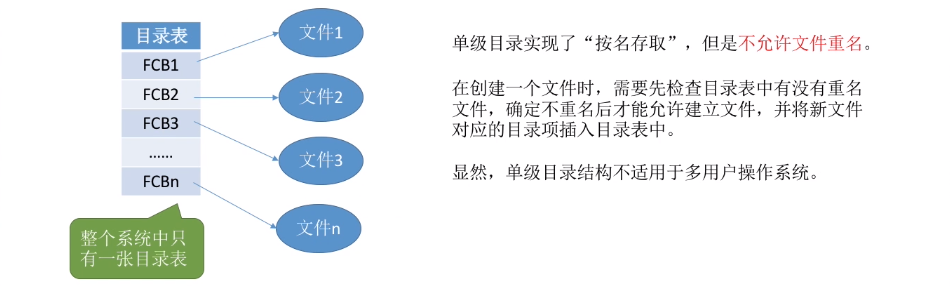
-
两级目录结构
为了克服单级目录所存在的缺点，可以采用两级方案，将文件目录分成主文件目录(Master File Directory, MFD)和用户文件目录(User File Directory, UFD)两级。
主文件目录项记录用户名及相应用户文件目录所在的存储位置。用户文件目录项记录该用户所有文件的 FCB。
当某用户欲对其文件进行访问时，只需搜索该用户对应的 UFD，这既解决了不同用户文件的“重名”问题，又在一定程度上保证了文件的安全。
两级目录结构提高了检索的速度，解决了多用户之间的文件重名问题，文件系统可以在目录上实现访问限制。但是两级目录结构缺乏灵活性，不能对文件分类。
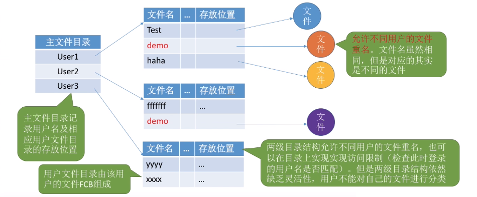
-
树形目录结构
将两级目录结构加以推广，就形成了树形目录结构。它可以明显地提高对目录的检索速度和文件系统的性能。
当用户要访问某个文件时，用文件的路径名标识文件，文件路径名是个字符串，由从根目录出发到所找文件通路上所有目录名与数据文件名用分隔符“/”链接而成。
从根目录出发的路径称为绝对路径，系统中的每个文件都有唯一的路径名。
由于一个进程在运行时，其所访问的文件大多局限于某个范围，当层次较多时，每次从根目录查询会浪费时间，于是可为每个进程设置一个当前目录（又称工作目录），此时进程对各文件的访问都只须相对于当前目录而进行，而不需要从根目录一层一层地检索，加快了文件的检索速度。
树形目录结构可以很方便地对文件进行分类，层次结构清晰，也能够更有效地进行文件的管理和保护。在树形目录中，不同性质、不同用户的文件，可以分别呈现在系统目录树的不同层次或不同子树中，很容易地赋予不同的存取权限。但是，在树形目录中查找一个文件，需要按路径名逐级访问中间节点，增加了磁盘访问次数，这无疑会影响查询速度。
-
无环图目录结构
树形目录结构能便于实现文件分类，但不便于实现文件共享，为此在树形目录结构的基础上加一些指向同一节点的有向边，使整个目录成为一个有向无环图。
这种结构允许目录共享子目录或文件，同一个文件或子目录可以出现在两个或多个目录中。当某用户要求删除一个共享节点时，若系统只是简单地将它删除，则当另一共享用户需要访问时，会因无法找到这个文件而发生错误。为此，可为每个共享节点设置一个共享计数器，每当图中增加对该节点的共享链时，计数器加 1；每当某用户提出删除该节点时，计数器减 1。仅当共享计数器为 0 时，才真正删除该节点，否则仅删除请求用户的共享链。
无环图目录结构方便地实现了文件的共享，但使得系统的管理变得更加复杂。
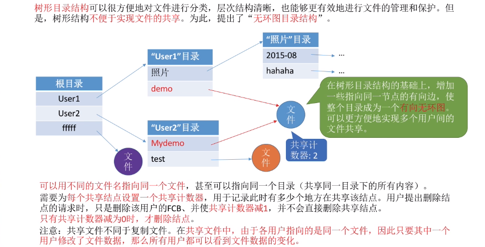
目录的操作
文件共享
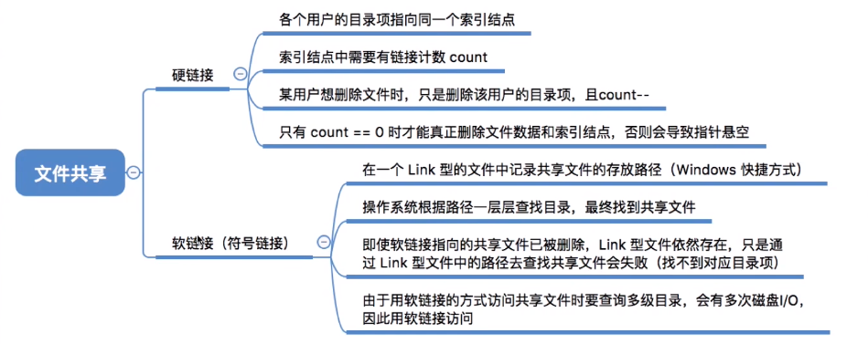
文件共享使多个用户共享同一个文件，系统中只需保留该文件的一个副本。若系统不能提供共享功能，则每个需要该文件的用户都要有各自的副本，会造成对存储空间的极大浪费。
基于无环图目录结构可以实现文件共享，当建立链接关系时，必须将被共享文件的物理地址（盘块号）复制到相应的目录。如果某个用户向该文件添加新数据，且需要增加新盘块，那么这些新增的盘块只出现在执行操作的目录中，对其他共享用户是不可见的。
基于索引结点的共享方式(硬链接)
硬链接是基于索引节点的共享方式，它将文件的物理地址和属性等信息不再放在目录项中，而是放在索引节点中，在文件目录中只设置文件名及指向相应索引节点的指针。
在用户 A 和 B 的文件目录中，都设置有指向共享文件的索引节点指针。在索引节点中还有一个链接计数 count，也称引用计数，表示链接到本索引节点（即文件）上的用户目录项的数目。当 count=2 时，表示有两个用户目录项链接到本文件上，即有两个用户共享此文件。
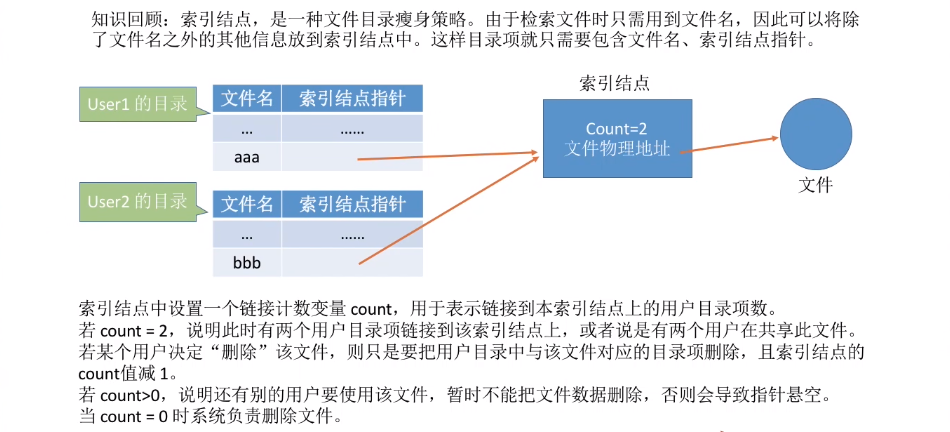
用户 A 创建一个新文件时，他便是该文件的所有者，此时将 count 置为 1。用户 B 要共享此文件时，在 B 的目录中增加一个目录项，并设置一个指针指向该文件的索引节点。此时，文件主仍然是用户 A，count=2。
如果用户 A 此时不再需要此文件，不能直接将其删除。因为若删除了该文件，也必然删除了该文件的索引节点，这样便会使用户 B 的指针悬空，而 B 可能正在此文件上执行写操作，此时将因此半途而废。因此用户 A 不能删除此文件，只是将该文件的 count 减 1，然后删除自己目录中的相应目录项。用户 B 仍可以使用该文件。
当 count=0 时，表示没有用户使用该文件，才会删除该文件。
基于符号链的共享方式(软链接)
为使用户 B 能共享用户 A 的一个文件 F，可由系统创建一个 LINK 类型的新文件 L，并将文件 L 写入用户 B 的目录，以实现 B 的目录与文 件 F 的链接。文件 L 中只含有被链接文件 F 的路径名。这种链接方法称为符号链接或软链接，它类似于 Windows 系统中的快捷方式。
当用户 B 访问文件 L 时，操作系统看到要读的文件属于 LINK 类型，则根据其中记录的路径名去查询文件 F，然后对 F 进行读/写操作，从而实现用户 B 对文件 F 的共享。
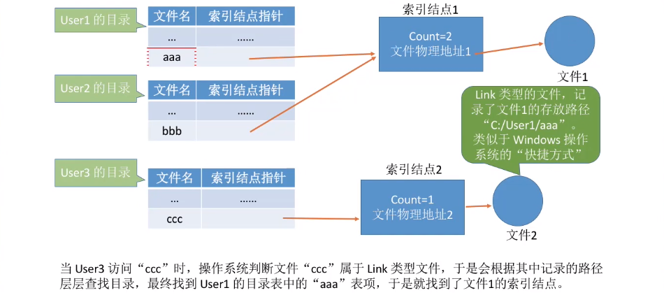
利用符号链方式实现文件共享时，只有文件主才拥有指向其索引节点的指针。而共享该文件的其他用户只有该文件的路径名，并不拥有指向其索引节点的指针。这样，也就不会发生在文件主删除一个共享文件后留下一个悬空指针的情况。当文件主将一个共享文件删除后，若其他用户又试图通过符号链去访问它时，则会访问失败，于是再将符号链删除，此时不会产生任何影响。
建立符号链接时，引用计数值直接设置为 1，不受被链接文件的影响。
删除文件时，删除操作对于符号链接是不可见的，这并不影响文件系统，当以后再通过符号链接访问时，发现文件不存在，直接删除符号链接。
在符号链的共享方式中，当其他用户读共享文件时，系统根据文件路径名依次查找目录，直至找到该文件的索引节点。因此，每次访问共享文件时，都可能要多次地读盘，增大了访问文件的开销。此外，符号链接也是一个文件，其索引节点也要耗费一定的磁盘空间。
利用符号链实现网络文件共享时，只需提供该文件所在机器的网络地址及文件路径名。
硬链接的查找速度要比软链接的快。
文件系统
文件系统结构
文件系统提供高效和便捷的磁盘访问，以便允许存储、定位、提取数据。
现代操作系统有多种文件系统类型，因此文件系统的层次结构也不尽相同。
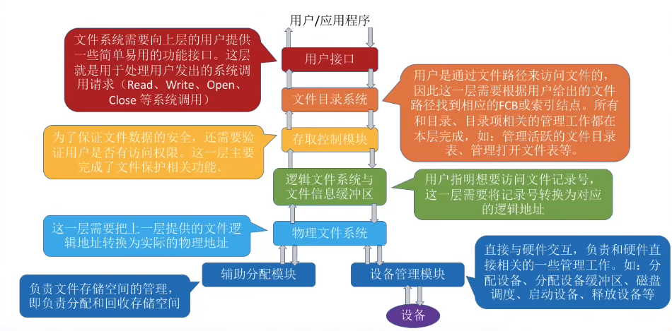
文件系统布局
文件系统存放在磁盘上，多数磁盘划分为一个或多个分区，每个分区中有一个独立的文件系统。
文件系统可能包括如下信息：启动操作系统的方式、总的块数、空闲块的数量和位置、目录结构以及各个具体文件等。
简单描述如下：
-
主引导记录(MasterBootRecord, MBR)
位于磁盘的 0 号扇区，用来引导计算机，MBR 的后面是分区表，该表给出每个分区的起始和结束地址。表中的一个分区被标记为活动分区。当计算机启动时，BIOS 读入并执行 MBR。MBR 做的第一件事是确定活动分区，读入它的第一块，即引导块。
-
引导块(boot block)
MBR 执行引导块中的程序后，该程序负责启动该分区中的操作系统。每个分区都是统一从一个引导块开始，即使它不含有一个可启动的操作系统，也不排除以后会在该分区安装一个操作系统。Windows 系统称之为分区引导扇区。除了从引导块开始，磁盘分区的布局是随着文件系统的不同而变化的。
-
超级块(super block)
包含文件系统的所有关键信息，在计算机启动时，或者在该文件系统首次使用时，超级块会被读入内存。超级块中的典型信息包括分区的块的数量、块的大小、空闲块的数量和指针、空闲的 FCB 数量和 FCB 指针等。
-
文件系统中空闲块的信息，可以用位示图或指针链接的形式给出。后面也许跟的是一组 1 节点，每个文件对应一个节点，i 节点说明了文件的方方面面。接着可能是根目录，它存放文件系统目录树的根部。最后，磁盘的其他部分存放了其他所有的目录和文件。
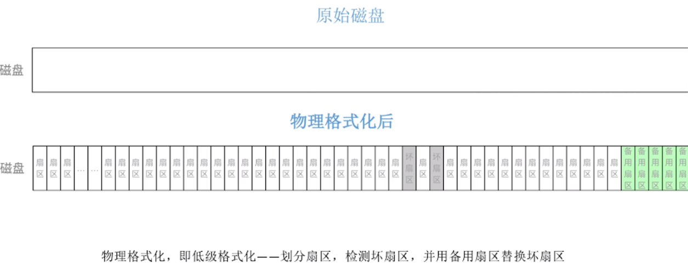
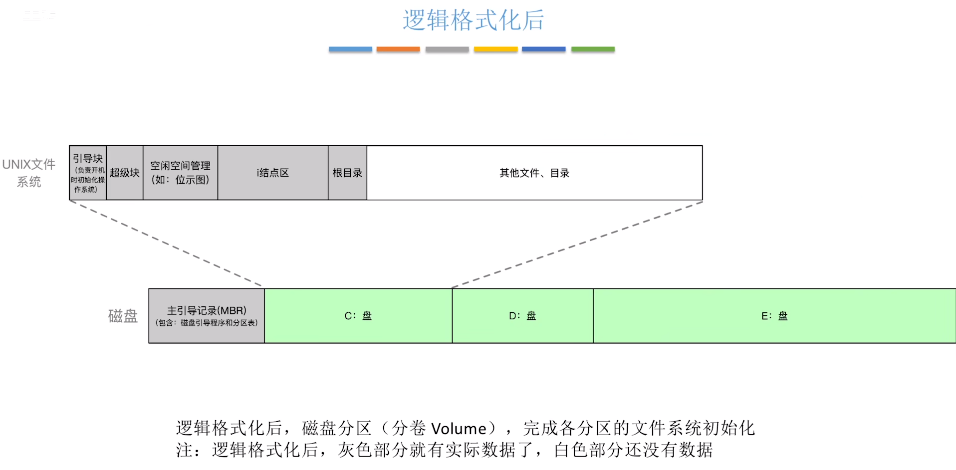
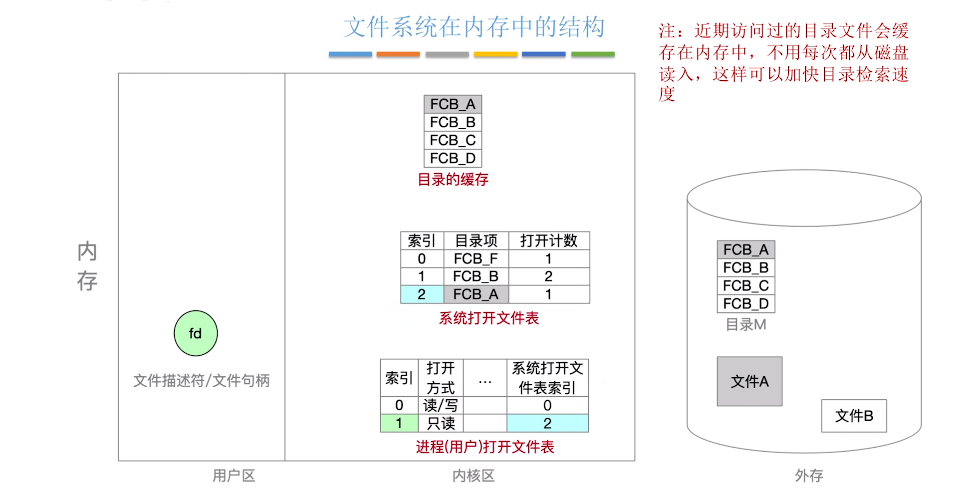
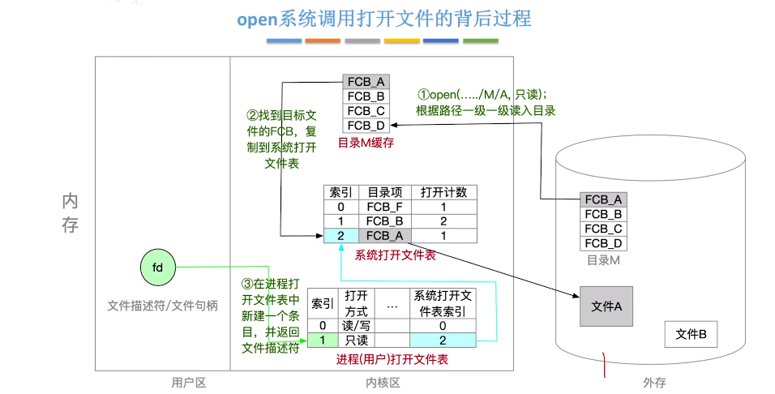
外存空闲空间管理
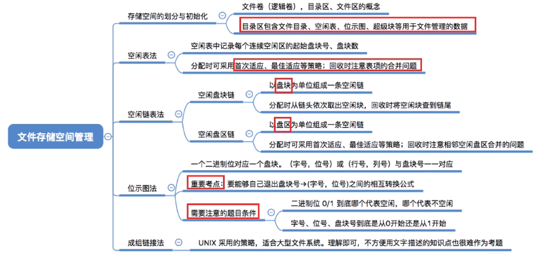
一个存储设备可以按整体用于文件系统，也可以细分。例如，一个磁盘可以划分为 2 个分区，每个分区都可以有单独的文件系统。包含文件系统的分区通常称为卷(volume)。卷可以是磁盘的一部分，也可以是整个磁盘，还可以是多个磁盘组成 RAID 集。
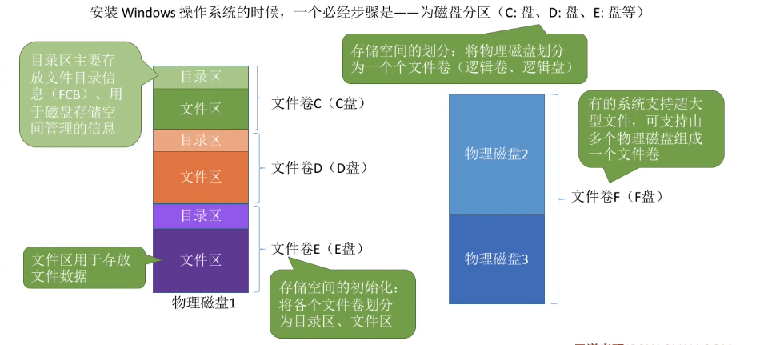
在一个卷中，存放文件数据的空间（文件区）和 FCB 的空间（目录区）是分离的。由于存在很多种类的文件表示和存放格式，所以现代操作系统中一般都有很多不同的文件管理模块，通过它们可以访问不同格式的卷中的文件。卷在提供文件服务前，必须由对应的文件程序进行初始化，划分好目录区和文件区，建立空闲空间管理表格及存放卷信息的超级块。
文件存储设备分成许多大小相同的物理块，并以块为单位交换信息，因此，文件存储设备的管理实质上是对空闲块的组织和管理，它包括空闲块的组织、分配与回收等问题。
空闲表法
空闲表法属于连续分配方式，它与内存的动态分区分配类似，为每个文件分配一块连续的存储空间。系统为外存上的所有空闲区建立一张空闲表，每个空闲区对应一个空闲表项，其中包括表项序号、该空闲区的第一个空闲盘块号、该空闲区的空闲盘块数等信息。再将所有空闲区按其起始盘块号递增的次序排列。
-
盘块的分配
空闲盘区的分配与内存的动态分配类似，也是采用首次适应算法、最佳适应算法等。例如，在系统为某新创建的文件分配空闲盘块时，先顺序地检索空闲盘块表的各表项，直至找到第一个其大小能满足要求的空闲区，再将该盘区分配给用户，同时修改空闲盘块表。
-
盘块的回收
在对用户所释放的存储空间进行回收时，也采用类似于内存回收的方法，即要考虑回收区是否与空闲盘块表中插入点的前区和后区相邻接，对相邻接者应予以合并。
优点是具有较高的分配速度，可减少访问磁盘的 I/O 频率。对于较小的文件（1 ～ 5 个盘块），可以采用连续分配方式为文件分配几个相邻的盘块。
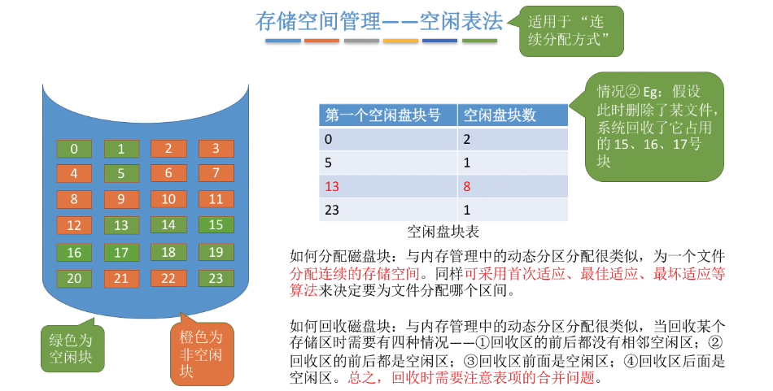
空闲链表法
空闲链表法是指将所有空闲盘区拉成一条空闲链，可分为以下两种。
-
空闲盘块链
空闲盘块链是指将磁盘上的所有空闲空间以盘块为单位拉成一条链。每个盘块都有指向下一个空闲盘块的指针。
当用户请求分配存储空间时，系统从链首开始，依次摘下适当数目的空闲盘块分配给用户。
当用户释放存储空间时，系统将回收的盘块依次插入空闲盘块链的末尾。
空闲盘块链的优点是分配和回收一个盘块的过程非常简单。缺点是在为一个文件分配盘块时可能要重复操作多次，效率较低；又因它是以盘块为单位的，空闲盘块链会很长。
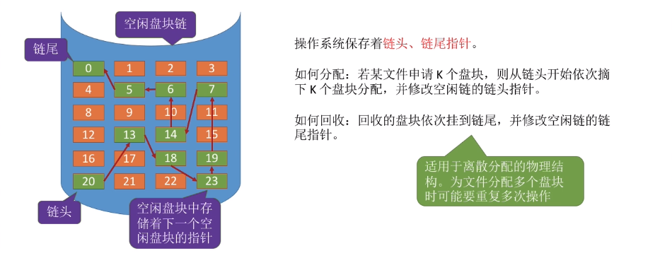
-
空闲盘区链
空闲盘区链是指将磁盘上的所有空闲盘区拉成一条链，每个盘区包含若干相邻的盘块。每个盘区含有下一个空闲盘区的指针和本盘区的盘块数。分配盘区的方法与内存的动态分区分配类似，通常采用首次适应算法。回收盘区时，同样也要将回收区与相邻接的空闲盘区合并。
空闲盘区链的优缺点正好与空闲盘块链的相反，优点是分配与回收的效率较高，且空闲盘区链较短。缺点是分配与回收的过程比较复杂。
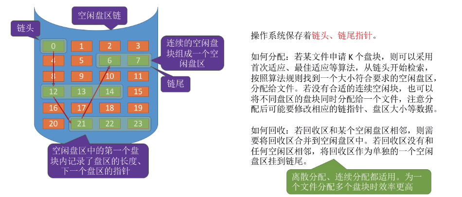
位示图法
位示图是利用二进制的一位来表示磁盘中一个盘块的使用情况，磁盘上的所有盘块都有一个二进制位与之对应。当其值为“0”时，表示对应的盘块空闲；为“1”时，表示已分配。这样，一个 mxn 位组成的位示图就可用来表示 mxn 个盘块的使用情况。
- 盘块的分配
- 顺序扫描位示图，从中找出一个或一组其值为“0”的二进制位。
- 找到的一个或一组二进制位转换成与之对应的盘块号。
- 修改位示图，令
map[i,j]=1。
- 盘块的回收
- 回收盘块的盘块号转换成位示图中的行号和列号。
- 修改位示图，令
map[i,j]=0。
Tip
注意位示图的行和列是从 1 还是从 0 开始编号，计算方法要进行相应的调整。
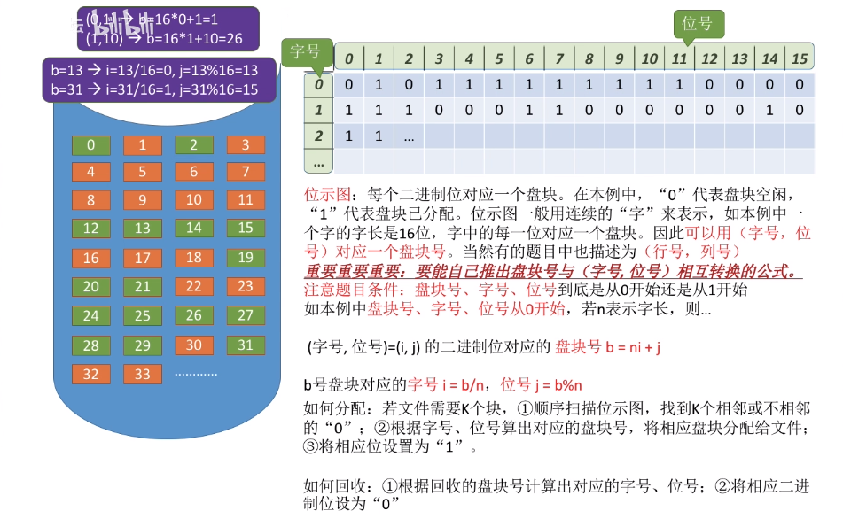
位示图法的优点是很容易在位示图中找到一个或一组相邻接的空闲盘块。由于位示图很小，占用空间少，因此可将它保存在内存中，从而节省许多磁盘启动的并销。
位示图法的问题是位示图大小会随着磁盘容量的增加而增大，因此常用于小型计算机。
成组链接法
空闲表法、空闲链表法不适用于大型文件系统，因为空闲表或空闲链表可能过大。UNIX 系统中采用了成组链接法对磁盘空闲块进行管理。
成组链接法将空闲盘块分成若干组，如 100 个盘块作为一组，每组的第一个盘块记录下一组的空闲盘块总数和空闲盘块号。这样，由各组的第一个盘块可以链接成一条链。第一组的空闲盘块总数和空闲盘块号保存在内存的专用栈中，称为空闲盘块号栈。
简而言之，每组（除了最后一组）的第一块作为索引块，然后将这些索引块链接起来。
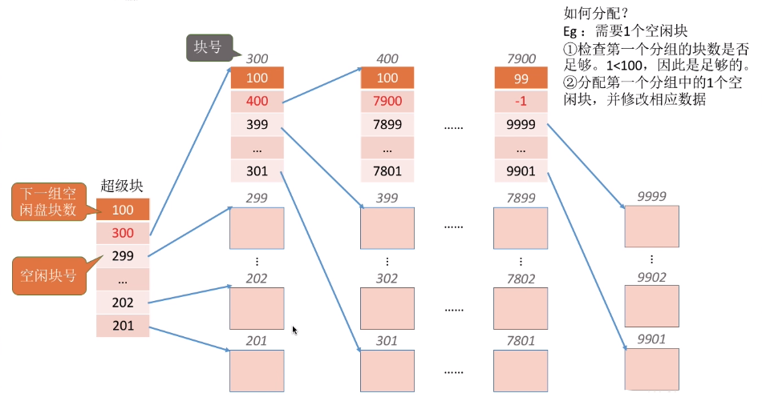
虚拟文件系统
虚拟文件系统(VFS)屏蔽了不同文件系统的差异和操作细节，向上为用户提供了文件操作的统一调用接口。当用户程序访问文件时，通过 VFS 提供的统一调用函数来操作不同文件系统的文件，而无须考虑具体的文件系统和实际的存储介质。
虚拟文件系统采用了面向对象的思想，它抽象出一个通用的文件系统模型，定义了通用文件系统都支持的接口。新的文件系统只要支持并实现这些接口，即可安装和使用。为了实现虚拟文件系统，系统抽象了四种对象类型。每个对象都包含数据和函数指针，这些函数指针指向操作这些数据的文件系统的实现函数。
-
超级块对象
表示一个已安装（或称挂载）的特定文件系统。超级块对象对应于磁盘上特定扇区的文件系统超级块，用于存储已安装文件系统的元信息。其
-
索引节点对象
表示一个特定的文件。索引节点和文件是一对一的关系。只有当文件被访问时，才在内存中 创建索引节点对象，每个索引节点对象都会复制磁盘索引节点包含的一些数据。
-
目录项对象
表示一个特定的目录项。目录项对象是一个路径的组成部分，它包含指向关联索引节点的指针，还包含指向父目录和指向子目录的指针。不同于前面两个对象，目录项对象在磁盘上没有对应的数据结构，而是 VFS 在遍历路径的过程中，将它们逐个解析成目录项对象的。
-
文件对象
表示一个与进程相关的已打开文件。可以通过调用 open 打开一个文件，通过调用 close 关闭一个文件。文件对象和物理文件的关系类似于进程和程序的关系。文件对象仅是进程视角上代表已打开的文件，它反过来指向其索引节点。文件对象包含与该文件相关联的目录项对象，包含该文件的文件系统、文件指针等，还包含在该文件对象上的一系列操作函数。
虚拟文件系统的特点：
-
向上层用户进程提供统一标准的系统调用接口，屏蔽底层具体文件系统的实现差异。
-
VFS 要求下层的文件系统必须实现某些规定的函数功能，如：open/read/write。一个新的文件系统想要在某操作系统上被使用，就必须满足该操作系统 VFS 的要求。
-
每打开一个文件，VFS 就在主存中新建一个 vnode，用统一的数据结构表示文件，无论该文件存储在哪个文件系统。
vnode 只存在于主存中，而 inode 既会被调入主存，也会在外存中存储
文件系统挂载
如文件在使用前要打开那样，文件系统在进程使用之前必须先安装，也称挂载（Mounting)。
将设备中的文件系统挂载到某个目录后，就可通过这个目录来访问设备上的文件。这里的设备指的是逻辑上的设备，如一个磁盘上的不同分区都可视为不同的设备。